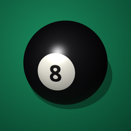

Offline 8-ball and 9-ball pool for Android, iOS and Steam. Play the computer on three levels, a friend on the same device, or practise on your own.
8-Ball: the table is open after the break; the first legal pot decides solids or stripes; pot your group, then the 8. Potting the 8 early loses. 9-Ball: always hit the lowest numbered ball first; a legally potted 9 wins. A foul (cue ball potted, no ball hit, wrong ball first, no cushion after contact) gives the opponent ball in hand.
Questions, bugs or ideas: meltembkr@gmail.com
Nişan için masada sürükle, sağdaki tekerlekle ince ayar yap. Vurmak için soldaki güç çubuğunu aşağı çekip bırak. Efekt için beyaz top düğmesine dokunup kırmızı noktayı yerleştir. Faulden sonra beyaz topu istediğin yere sürükle. Animasyonlu rehberi menüdeki Nasıl oynanır ile tekrar izleyebilirsin. Soru ve öneriler: meltembkr@gmail.com